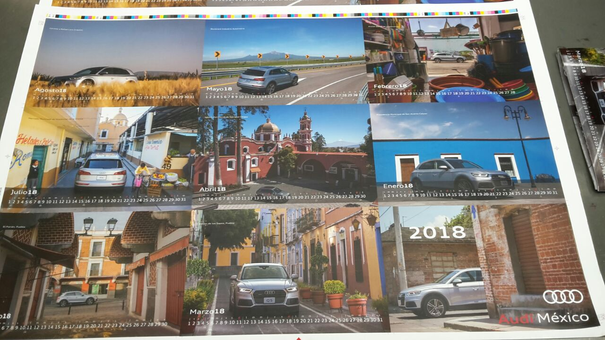

The Audi Q5 marked a milestone for Mexico's automotive industry — the first Premium-segment car ever built in the country. When leadership asked for a gift to celebrate the occasion with employees, I saw the perfect opportunity to do more than just hand out a present: I developed a calendar that would showcase the car, build pride among the people who built it, and tell a visual story along the way.
Each month follows a Q5 making its way through the state of Puebla, where the car itself was made — every photograph featuring an iconic Mexican location, creating a sense of identity with the very hands that built it. I was in charge of the concept, location scouting, and production. The calendar was printed in a run of 10,000 copies and handed out to Audi Mexico's workers.
The amazing pictures were taken by Mao Carrera and Ezequiel Hernández.
